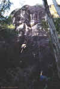
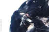

By Lee Skidmore, November 1999
Last updated 24 March, 2000

| The Citadel Climbing Guide |
By Lee Skidmore, November 1999 Last updated 24 March, 2000 |
|
|
|
|
INTRODUCTION A newly "discovered" area which saw some development in August 1998. Adventure awaits those with drive and enthusiasm. The Citadel is located within the boundary of Lumholtz National Park. It is a massive National Park (over 110 000 hectares) and this cliff is a long way from nowhere, but it is probably best not to arouse suspicions of climbing in the area. The National Park Authorities might not like it, but due to the remoteness from established walking trails and such, I assume it's probably okay. However, better to be safe than sorry, so keep it quiet. There are no facilities, so take everything you need. Also, avoid littering. |
 |
|
Above: The Citadel as seen from the main highway. Click for a very large version. |
|
The above picture doesn't even show the whole cliff. There is about 25m of rock below the treeline! This cliff is huge! Over 100m high from top to bottom with 60m+ sections of uninterrupted volcanic rock.
HISTORY |
|
|
Above: The spectacular view from the top of the routes |
|
ETHICS Ethics vary from area to area, and The Citadel is no exception. Keep in mind The Citadel is an adventure crag, not a consumer-friendly sport crag. Be mindful of the vegetation - no chopping trees and such. Leave vegetation on the cliff unless it directly interferes with a route, in which case remove it entirely. Do not mark routes with paint. It goes without saying to not chip holds or retrobolt. Do not put up bolt ladder sport routes - this is not the place for it. Let new routes follow natural lines and only use bolts where natural protection is unavailable. If bolts are used, use only stainless expansion bolts or glue-in carrots and paint hangers to blend in with the rock. Do not leave any loose rock or other mobile objects on new routes. |
 |
|
Above: A good profile of a fine buttress. Steve is on Hidden Facets. The Dark Crystal is on the R |
ROUTE GUIDE
If you walk up to the crag the obvious way (heading for the middle of the cliff), you will probably arrive at what feels like the middle, but is actually around the middle-left of the crag. This area is marked by a huge, black corner (Carborundum Central) and makes a good base camp.
Now that you're at the cliff, the routes will be described from L to R
On the far L of the cliff there is a large boulder with a few potential routes on it including a 2m roof split by a finger-width crack. One route on this boulder has been top-roped.
Unclimbed overhang arête route 7m 20?
Fantastic photo op. On the L of the seaward side of the boulder and a couple of metres L of
Twin Paranoia. About 2 bolts required up the short scooped face and overhanging blunt
arête.
Twin Paranoia 7m 16-19
Again, great photo op. On the seaward side of the boulder, climb the L-leaning twin cracks (R-one wide, L-one thin) L of the overhang to the top. Natural pro and tree belay.
FTRA: Steve Baskerville & Jason Shaw 1/8/98.
Unclimbed arête route ~13m
About 7m R of Double Exposure. Up pitted arête (2 bolts needed) to below 2m roof. A variety of options now exist. Step easily R to escape up slabby wall (easy) or step L beneath roof and attempt finger crack through roof (stoopidly hard).
Unclimbed easy route 10-13m 4?
Easy peasy. About 3m R of the arête route. Easily up twin, wide, slabby cracks, then runout up slab to top and probable tree belay.
Beneath this boulder on the seaward side (but facing Ingham), is a 10-15m high, very easy-angled scooped slab. The angle makes it scary to solo up, but this could be good for honing your slab skills on top rope.
Now way back down R. About 30m L of Carborundum Central (the big black corner) is a very large boulder about 20m off the ground that forms a 3m roof with an obvious offwidth running through the roof. This is unclimbed (any takers?), but makes a good landmark.
Corner-crack project 8m 15?
Starts a few metres L of the boulder-roof at the large, recessed, slabby corner-crack. Steve has led this to about 5m and Lee has soloed up to around the same point. The crux is getting up to the tree. Finish at tree.
Project: Steve Baskerville 1/8/98.
Now 30m R to the big black corner.
Verdant Vendetta 30m 19 A1
Just like Carborundum Central, this route was only climbed as an access
route to bolt The Dark Crystal, and is not really recommended.
 1) 15m 19 A1. A dangerous pitch. Start at
tree belay on top of sloping ledge 15-20m up. Your aim is to get into the
vegetated corner-crack and through the roof any way you can. Ooze R-wards around
arête and onto face. Micro-wires here, and move up and R to incut on small
sloping ledge a few metres L of vegetated corner. Grab hold on face above and
fearfully mantle sloping ledge. Sidle delicately R into the vegetated
corner-crack and bomber big cams. Now through roof (freeable, but aided by first
ascentionist) and then up wide corner-crack above to sloping ledge.
1) 15m 19 A1. A dangerous pitch. Start at
tree belay on top of sloping ledge 15-20m up. Your aim is to get into the
vegetated corner-crack and through the roof any way you can. Ooze R-wards around
arête and onto face. Micro-wires here, and move up and R to incut on small
sloping ledge a few metres L of vegetated corner. Grab hold on face above and
fearfully mantle sloping ledge. Sidle delicately R into the vegetated
corner-crack and bomber big cams. Now through roof (freeable, but aided by first
ascentionist) and then up wide corner-crack above to sloping ledge.
2) 15m 1. For the grade, this pitch is great. A walk with monster exposure!
Traverse R and then around the corner on the 1m wide sloping ledge. There is
good protection at your feet. The pitch finishes with a 2.5m high layback crack
which is about grade 10, but I always wanted to grade something grade 1. Tree
belay, and then double rope rap off tree down The Dark Crystal buttress to
ground.
FA: Lee Skidmore (aid on pitch 1), Danny Peters (seconded free) 1/8/98.
|
About 20m R of Carborundum Central is an excellent 20m wide buttress with two obvious, sterling lines that finish at chains. A single 55m rope is sufficient on both routes but double ropes would be better. As a quick note, both routes (esp. the first) would benefit with a good scrubbing if someone has the time. |
** Hidden Facets 28m
21
The first of a brilliant duo. Mostly around 17 with a short, well protected crux.
One FH and extensive natural gear. Starts at vague slabby corner 3m R of small detached pillar. Up slab passing poor wires to good crack at 8m. Up crack 'till it blanks out, pull 1m R, and up to pockets beneath bulging 1m roof. Traverse 2m L along small ledge to pockets below black FH. Past this through the crux undercling and up to rest at base of superb corner. Great moves up this, pull lip and up slab for 6m to chains.
Lee Skidmore, Steve Baskerville 8/8/98.
|  | ||
|
Above: Sequence of Lee flashing the first ascent of Hidden Facets. Top left and middle are of the same move (crux section) |
||
About 50m R of The Dark Crystal is the obvious, rectangular orange scar about 30m up on the wall (level with the treeline in
the picture) which is capped by a 3m roof. This is described below:
Unclimbed orange scar route 50-65m
Lee was gunning for the first ascent of this great line, but had to leave
Townsville before he got the chance. It's now up for grabs. The route will blast a line up the face and through the L side of the orange scar and up the headwall in two pitches. Start on the ground, level with R side of orange roof. Tricky start
(1 bolt needed) to slabby crackline. Up this for 20m to below roof, then follow the crack to L side of roof and then through this. From here, bolts required for the next 25m to a sloping ledge on the R - alternately there is 15m more above ledge to the big grassy tree-covered ledge.
10m R of orange scar below crackline.
Unclimbed crack to steep arête route 25-30m
This route will be pretty hard, but straightforward and well-protected. It remains to be seen whether the top
arête will even be climbable, but it will certainly need bolts. Up steep crackline through sloping ledges to
arête then up this.
Further R of this route, the base starts to get very scrappy with broken, small walls and much vegetation. There is still rock - just have to get to it.
The big grassy ledge mentioned above forms the top of the Wall Of The Afternoon Sun
(see the picture). It is probably possible to walk off the cliff to the R from this ledge. The Wall Of The Afternoon Sun is about 30-40m high and about 50m long. It has a bushy ledge at it's base, but this cannot be easily accessed from ground level. Climbing, or rapping in to this ledge will be required. From this bushy ledge looking out at the sea, look L and you'll see a small, steep wall, about 15-20m high which will warrant attention.
Now to the big grassy ledge on top of the Wall Of The Afternoon Sun
Unclimbed upper-wall white-streaked route 20m
Starts in the middle of the big grassy ledge at the top of Wall Of The Afternoon Sun and is plainly visible in
the photo.
For this area in particular, it is asked that you please email any news of repeats, new routes or queries to me, so that this page can be kept up to date.

{kind=link}
{kind=link}
{kind=link}
{kind=link}
{kind=link}
{kind=link}
{kind=link}
{kind=link}
{kind=link}
{kind=link}